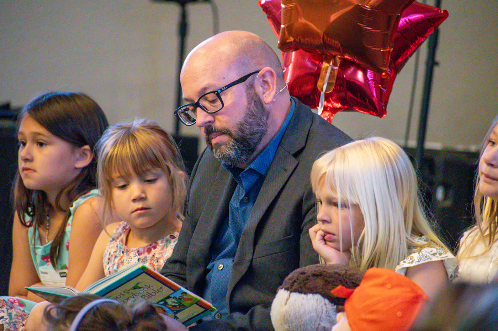
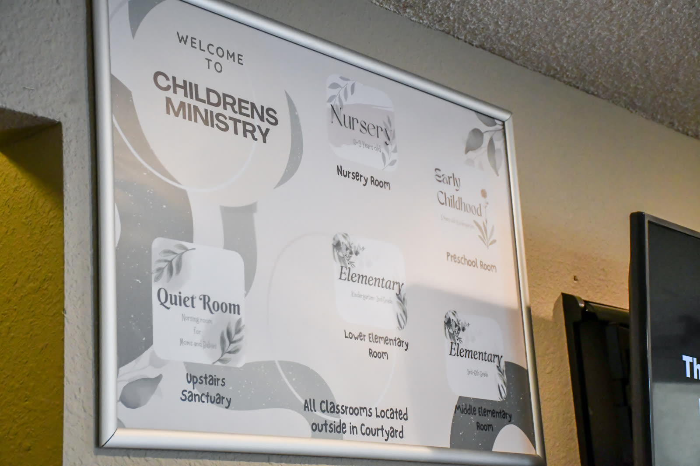
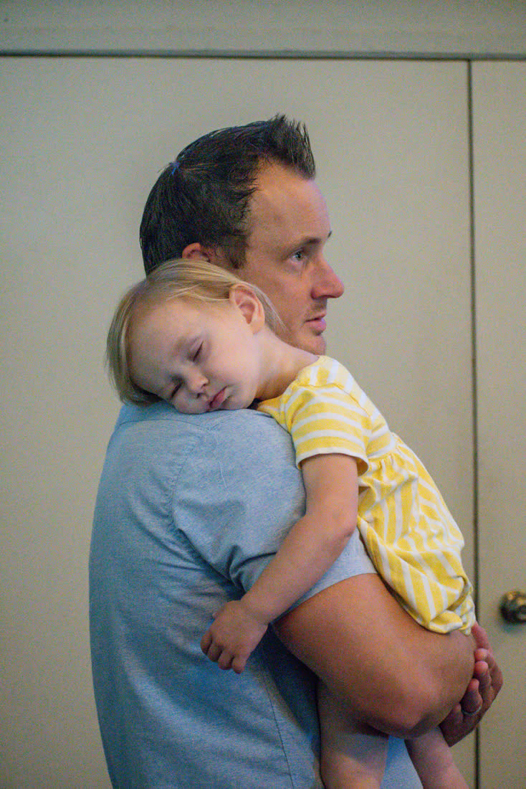
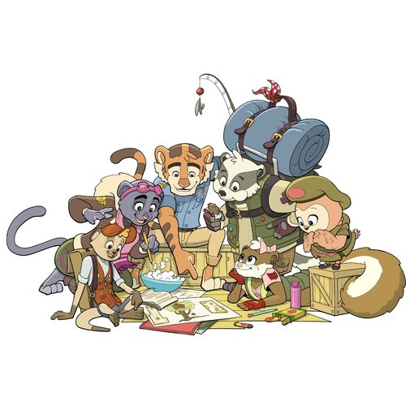

Kids & Youth
A place your kids can't wait to get to.
Nursery and Children's Church every Sunday, plus Adventure Club for kids and Cool Youth for 7th–12th grade on Tuesday nights.
Children's Church · Nursery–6th grade
How Sunday works
- Check in. Check-in stations are in the foyer and open 10 minutes before the service.
- Straight to class. After check-in, kids go directly to their classrooms, where Children's Church begins with its own time of worship.
- Learn about the Lord. Each class hears a Bible lesson taught at their level, plus activities and snack time.
- Check out. Every child must be checked out. After the service, come to your child's classroom to check them out.
Safe and cared for. All Children's Church volunteers complete MinistrySafe screening.

Classes by age
Nursery
Babies and toddlers can get their wiggles out with fun toys, snacks, multiple play areas and an enclosed play yard, while you attend the service.
Preschool
Trains, magna-tiles and potato heads, but the best part is Bible Time: a story from the Jesus Storybook Bible, songs and prayer.
Kindergarten–2nd grade
Lower Elementary Room (downstairs). Bible stories, memory work, learning to pray, activities and snack time.
3rd–6th grade
Middle Elementary Room (upstairs). Older kids learn the same Bible passage and verses as every other class each week, in an expanded lesson that goes deeper.


Our new Sunday curriculum
Generations of Grace
On Sunday mornings, Children's Church now uses Generations of Grace, a Bible curriculum from Grace Community Church in Sun Valley, CA (the home church of Grace to You).
- The whole story of the Bible. A three-year survey of Scripture's most important narratives: two years in the Old Testament and one year in the New Testament.
- Genesis to Revelation, again and again. A child who starts at age 3 can walk through the whole Bible three times before junior high.
- One lesson for every age. All the kids learn the same Bible story each week, taught at their level (ages 3–5, 6–8 and 9–11), so families can talk about it together at home.
On Tuesday nights, Adventure Club builds on it with the big truths of the faith, from the same Grace curriculum family.
Coming up
Children's Church events
Christmas Pageant
The Birth of Jesus!
Kids in K–6th grade are invited to be in this year's pageant!
- PracticesSundays through Dec 6, during Children's Church (11:15 am–noon)
- Dress rehearsalSunday, Dec 6 · 12:30–2:00 pm, main stage
- PerformanceSunday, Dec 13 · during the worship service
Adventure Club
Our midweek children's ministry: Bible lessons, Scripture memory, games and worship.
Learn more →Mommy and Me
A fun time in the sanctuary for moms and little ones to play, find community, and grow together. No registration required.
Midweek · Tuesdays, 6:30–8:30 pm
Adventure Club
After many wonderful years with Awana, Cool Community Church is excited to begin a new chapter with Adventure Club! It's our midweek children's ministry, designed to help kids know God, love His Word, and grow in their faith through engaging Bible lessons, Scripture memorization, games, worship, and meaningful relationships.
The name and curriculum have changed, but our mission remains the same: to partner with families in raising children who know and follow Jesus Christ. Whether your family has been with us for years or you're joining us for the first time, we'd love to welcome you!

What is Adventure Club?
Adventure Club is a midweek curriculum from Grace Community Church in Sun Valley, CA, adapted from Biblical Doctrine by John MacArthur and Richard Mayhue. Over three school years, kids study the high points of systematic theology: God the Father, Son and Holy Spirit; man, sin and salvation; and the church, the Bible and the end times.
- Teaches big truths about God in a fun, engaging, age-appropriate way.
- Helps kids memorize Scripture and understand what it means, not just rote memorization.
- Every age group learns the same lesson each week at its own level, so the whole family is on the same page and can keep the conversation going at home.
Adventure Club preview
Moments of Truth lesson videos help kids review each week's truth at home. Watch lesson 1: The Bible →
Questions? Email cooladventureclub@coolchurch.org.
Summer
Vacation Bible School
Check back soon for news about our summer 2027 VBS.
Serve
Become a leader
Is God calling you to serve in Children's Ministries? Reach out to our Children's Ministry Co-Directors, Sarah Costa and Brittany Jimenez.
Jesus said, "Let the little children come to me..." Matthew 19:14
Junior High & High School · 7th–12th grade
We love our students.
They're smart. They're funny. They're bold. And they're bursting with potential. Cool Youth connects junior high and high school students with one another and with leaders who walk alongside them, with Bible teaching, small group discussion, worship, fellowship and fun in a safe environment.
"To present the glories of Christ, so our students might come to love Him and become more like Him."
Tuesdays, 6:15–8:00 pm
Junior High & High School Youth Group
863 Cave Valley Rd, Cool
Questions? Email our Youth Director, Caleb Dulinsky.